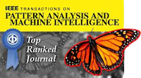
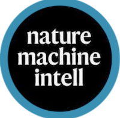

Huazhu FU
Principal Scientist Email: hzfu(AT)ieee(DOT)org |
My research focuses on:
- AI for Healthcare: Medical Image Analysis, ⭐ Medical Vision-Language Model, ⭐ Medical Foundation Model.
- Trustworthy AI: Federated Learning, ⭐ Uncertainty Estimation, ⭐ Visual Grounding.
 Recent News:
Recent News:
 Professional Activities:
Professional Activities:
- Co-Chair of “Students & Young Professionals” Subcommittee in the IEEE Signal Processing Society (SPS) Technical Committee on Bio Imaging and Signal Processing (BISP).
- Member of the IEEE Engineering in Medicine and Biology Society (EMBS) Technical Committee on Biomedical Imaging and Image Processing (BIIP).
- Associate Editor:
- IEEE Transactions on Medical Imaging (IEEE TMI), 2020 - present.
- IEEE Transactions on Neural Networks and Learning Systems (IEEE TNNLS), 2022 - present.
- IEEE Journal of Biomedical and Health Informatics (IEEE JBHI), 2020 - present.
- IEEE Transactions on Artificial Intelligence (IEEE TAI), 2023 - present.
- Pattern Recognition (PR), 2024 - present.
- Visual Intelligence, 2024 - present.
- Meta-Radiology, 2023 - present.
- Challenge Organizer:
- "GAVE: Generalized Analysis of Vessels in Eye" with the MICCAI 2025. [Link]
- "STAGE2: 2nd Structural-Functional Transition in Glaucoma Assessment" with the MICCAI 2024. [Link]
- "ATLAS: A Tumor and Liver Automatic Segmentation" with the MICCAI 2023. [Link]
- "STAGE: Structural-Functional Transition in Glaucoma Assessment" with the MICCAI 2023. [Link]
- "GOALS: Glaucoma Oct Analysis and Layer Segmentation" with the MICCAI 2022. [Link]
- "GAMMA: Glaucoma Grading from Multi-Modality Images Challenge" with the MICCAI 2021. [Link] [Summary Paper]
- "REFUGE2: 2nd Retinal Fundus Glaucoma Challenge" with the MICCAI 2020. [Link] [Summary Paper]
- "ADAM: Automatic Detection challenge on Age-related Macular degeneration" with the ISBI 2020. [Link] [Summary Paper]
- "AGE: Angle closure Glaucoma Evaluation Challenge" with the MICCAI 2019. [Link] [Summary Paper]
- "PALM: PathologicAL Myopia detection from retinal images" with the ISBI 2019. [Link] [Data Summary]
- "REFUGE: Retinal Fundus Glaucoma Challenge" with the MICCAI 2018. [Link] [Summary Paper]
 Highlighted Publications:
Highlighted Publications:
Full publication list:
[Google Scholar]
|
|
"A deep learning based automatic report generator for retinal optical coherence tomography images", |
|
"Content Generation Models in Computational Pathology: A Comprehensive Survey on Methods, Applications, and Challenges", |
|
|
"Enhancing Diagnostic Accuracy in Rare and Common Fundus Diseases with a Knowledge-Rich Vision-Language Model", |
|
|
"An Eyecare Foundation Model for Clinical Assistance: a Randomized Controlled Trial", |
|
|
 |
"Uncertainty-aware Medical Diagnostic Phrase Identification and Grounding", |
|
"Neovascularization Segmentation via a Multilateral Interaction-Enhanced Graph Convolutional Network", |
|
|
"Enhancing Al Reliability: A Foundation Model with Uncertainty Estimation for Optical Coherence Tomography based Retinal Diseases Diagnosis", |
|
|
"Say No to Freeloader: Protecting Intellectual Property of Your Deep Model", |
|
|
"Structure Unbiased Adversarial Model for Medical Image Translation", |
|
|
|
"Early Detection of Dementia through Retinal Imaging and Trustworthy AI", |
|
"Uncertainty-inspired Open Set Learning for Retinal Anomaly Identification", |
|
|
 |
"Federated Benchmarking of Medical Artificial Intelligence with MedPerf", |
|
"Spatially informed clustering, integration, and deconvolution of spatial transcriptomics with GraphST", |
|
|
"GCoNet+: A Stronger Group Collaborative Co-Salient Object Detector", |
|
|
"Trusted Multi-View Classification with Dynamic Evidential Fusion", |
|
|
"Consistency and Diversity induced Human Motion Segmentation", |
|
|
"Re-thinking Co-Salient Object Detection", |
|
|
"Salient Object Detection in the Deep Learning Era: An In-Depth Survey", |
|
|
"Deep Partial Multi-View Learning", |
|
|
"Generalized Latent Multi-view Subspace Clustering", |

 Recognitions & Awards:
Recognitions & Awards:
-
2025: Young Scientist Publication Impact Award in MICCAI.
By "PraNet: Parallel Reverse Attention Network for Polyp Segmentation". - 2020-2025: World's Top 2% Scientists List, by Stanford/Elsevier (in category Artificial Intelligence & Image Processing). [Link]
- 2024: Highly Cited Researcher, in Web of Science (in the field of Cross-Field) by Clarivate. [Link]
- 2024: First Place in "Big Data Competition" in APTOS-APOIS 2024.
-
2024: Best Paper Award of Ophthalmic Medical Image Analysis (OMIA) Workshop in MICCAI.
By "Enhancing Large Foundation Models to Identify Fundus Diseases Based on Contrastive Enhanced Low-Rank Adaptation Prompt". -
2024: Collaborative Paper Award by Biomedical Research Council (BMRC), A*STAR.
By "Spatially informed clustering, integration, and deconvolution of spatial transcriptomics with GraphST". - 2024: Outstanding Presentation under the Computing, Data and Digital Sciences track at A*STAR CDF Day, 2024.
-
2023: Honorable Mention Award by Computational Visual Media Journal. [Link]
By "Specificity-preserving RGB-D saliency detection". - 2023: Achievement Award of 2023 TOP 100 Benchmarks & Evaluation by International Open Benchmark Council.
-
2023: Best Paper Award of Distributed, Collaborative and Federated Learning (DeCAF) Workshop in MICCAI.
By "Federated model aggregation via self-supervised priors for highly imbalanced medical image classification". -
2022: Best Paper Award of Ophthalmic Medical Image Analysis (OMIA) Workshop in MICCAI.
By "Localizing anatomical landmarks in ocular images using zoom-in attentive networks". -
2022: Best Paper Runner-up Award of Resource-Efficient Medical Image Analysis (REMIA) Workshop in MICCAI.
By "Facing annotation redundancy: Oct layer segmentation with only 10 annotated pixels per layer". -
2021: Best Paper Award in IEEE International Conference on Multimedia & Expo (ICME).
[Link]
By "Cross-view equivariant auto-encoder". -
2021: Finalist of the Young Scientist Publication Impact Award in MICCAI.
By "DeepVessel: Retinal Vessel Segmentation via Deep Learning and Conditional Random Field". -
2021: Most Influential Paper (Application) Award in Jittor Developer Conference.
By "PraNet: Parallel Reverse Attention Network for Polyp Segmentation".